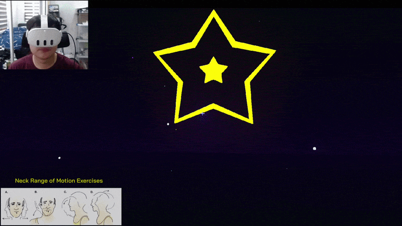

NECK MOBILITY
Star Gazing Stage
Focused on neck mobility, Star Gazing challenges players to align with targets and follow moving star paths synchronized with the music. The target paths can mirror movements such as rotation, flexion, and extension while also encouraging natural actions like looking and turning.
Head tracking · Seated play